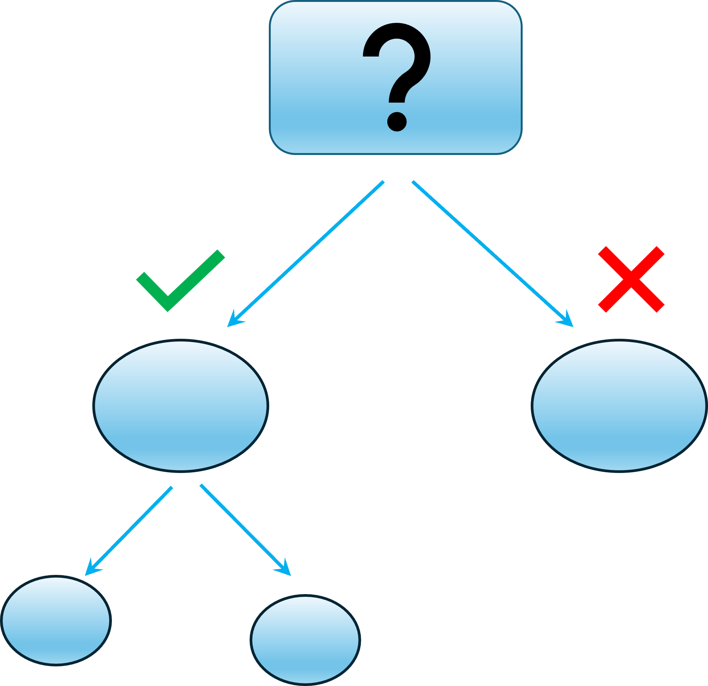
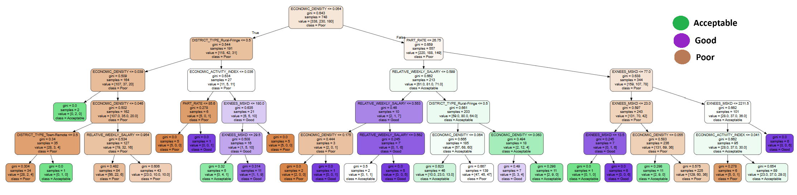
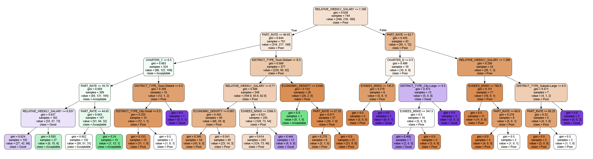
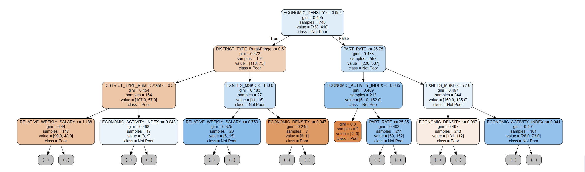
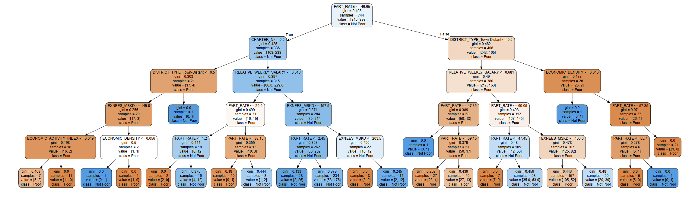
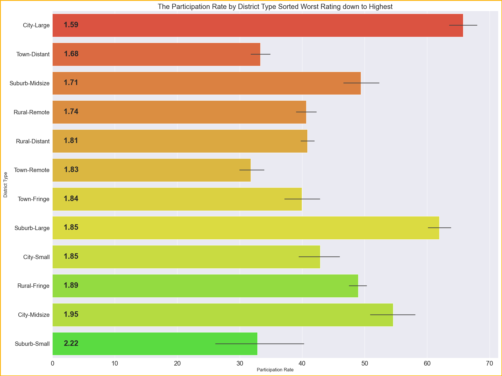

Pictured to the left is the 2017 tree which had a 64% accuracy score. The entire data set is first split based off of the economic density of the region, which splits the data into a poor performance to the left and not poor performance to the right. From there we are able to see features that change the outcomes, like district types and examinee numbers.

Texas-Sized Decisions
Every business wants to know what factors contribute to success. Here in Texas, we know that a well-performing school system leads to an effective workforce - which is in everyone's best interest. Businesses know that data is power, and using data, we can answer the question: 'how can we identify the drivers of effective performance'? A decision tree can help stakeholders visualize data and business outcomes in an understandable way. In this project, I explore how decision trees can be used as a business intelligence tool.
Texas has a vested interest in preparing students for a successful path to college. Students' SAT scores are predictive of college performance, including grades and retention. For this project, I use decision trees to determine which factors contribute to a school's average SAT scores. The factors that were considered had to do with a school district's economic health, their SAT participation rate, and the school's NCES district type.
I computed decision trees for years 2014 to 2023, considering each school's performance based on a running four year score. Originally, schools were rated "Poor", "Acceptable" or "Good" depending on which quartile their four year score fell for each year. The decision tree attempts to predict which factors will result in a higher probability of one of these outcomes. The boxes colored purple were rated "good", green were rated "acceptable", and brown were rated "poor". The features are described in more detail in the glossary.
See the notebook here to get a closer look at the decision trees and dig deeper into the methods I used.
What the data conveyed
Splitting the data on features across three different outcomes proved ineffective. The highest accuracy rate reached 55%, while in most years it fell below 50%. Also, for most years, it took several levels of drilling down into the data to achieve acceptable purity, with most of the trees appearing largely brown, indicating that each branch continued to produce poor outcomes. In summary, I found that, for the most part, the decision trees failed to ensure a confident story for the data and were not helpful in providing additional insights into which features produced better outcomes.


Since the decision trees were mostly full of poor outcomes, analyzing the data led to the question: Which features could improve SAT performance enough to move it out of a poor rating?” This rephrasing of the question led to a more interesting story for the data. For instance, the year 2017 shows that the top split would produce a 30% chance for performing better than poor to the left and a 60% chance to the right. Overall, the data is more comprehensible if we look at the binary outcomes instead.
Using two outcomes instead of three
Switching to binary outcomes, "poor" and "not poor", resulted in higher accuracy scores, improved gini measures, and a clearer path to pulling a school district out of a poor performance rating.
For these trees, the boxes were colored for poor and not poor.


One of the features that continued to show up on each decision tree, sometimes multiple times, is the participation rate. Particularly in 2022, the participation rate shows up often in the decision tree nodes. Schools' participation rates that remain within some thresholds appear to be performing better. We can see in the right figure that participation rate shows up as a node multiple times.
The Next Steps
The next steps I would recommend is to gather more information about the participation rates to analyze this feature further.

The left image shows each district type's average participation rate. The bars are ordered with the poorest performing district type at the top and the best performing at the bottom. The graph shows that the City-Large district type has the highest participation rate and the worst performing averages. The Suburb-Small district type has one of the lowest participation rate and the best performing averages. For the others, there does not appear to be a strong connection.